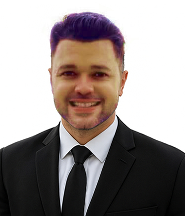

Jesús González
Resumen
Licenciado en administración mención aduanas, con experiencia en
atención y fidelización de clientes, con capacidades para:
planificar, programar, dirigir y controlar proyectos.
Datos Personales
Educación
-
Licenciado en Administración - Mención Aduanas
Institución: Universidad de Oriente - Venezuela.
Periodo: 2003 - 2009. -
Diplomado en Project Management
Institución: Universidad Andres Bello - Chile
Periodo: 2020 - 20222.
Experiencia Laboral
-
Product Manager | Plan OK S.A.
Periodo: junio 2019 - Actualmente.
Ubicación: Las Condes - Chile.
Sector: Desarrollo de software.Principales funciones:
- Dirigir equipos y definir objetivos según metodología SCRUM.
- Comunicación directa con clientes para llevar un proyecto hasta su finalización.
-
Auxiliar de logística | Parque LATAM
Periodo: enero 2018 - mayo 2019.
Ubicación: Las Condes - Chile.
Sector: Transporte aéreo.Principales funciones:
- Análisis y control de la entrada de clientes dentro del Parque.
- Elaboración de cheques y control de proveedores.
- Asistencia a reuniones: elaborar informes y presentar estrategias.
-
Ejecutivo de atención al cliente | Banco Banesco Venezuela
Periodo: marzo 2011 - febrero 2017.
Ubicación: Isla de Margarita - Venezuela.
Sector: Banca.Principales funciones:
- Entregar atención y gestión oportuna a las solicitudes de los clientes.
- Analizar y responder solicitudes mediante atención telefónica.
- Fidelizar clientes a través del cruce y colocación de productos.
Portafolio
Explora mis proyectos y trabajos realizados. Aquí hay una muestra de mis tres proyectos más destacados.

Proyecto SCRUM de Software
Plan OK S.A.
Liderazgo de un equipo de desarrollo para entregar un módulo de gestión de clientes a tiempo y dentro del presupuesto.
Ver proyecto
Optimización Logística Aérea
Parque LATAM
Implementación de un nuevo sistema de control de inventario que redujo los errores de despacho en un 15%.
Ver proyecto
Campaña de Fidelización Bancaria
Banco Banesco Venezuela
Diseño y ejecución de una estrategia de cruce de productos que incrementó la colocación de nuevas cuentas.
Ver proyecto